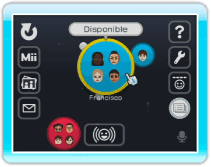
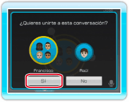
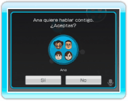
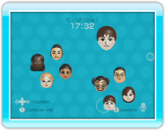

Para unirte a una conversación que ya está iniciada, sigue estos pasos.
Nota: No podrás unirte a una conversación si en ella ya hay cuatro usuarios hablando.
1.
Enviar una solicitud para unirse a una conversación

Ve a la antesala y selecciona al moderador de la conversación a la que te quieres unir. El moderador tendrá un contorno amarillo alrededor de su círculo.
2.
Confirmar una solicitud para
unirse a una conversación

Tras seleccionar a un moderador, aparecerá un mensaje pidiendo tu confirmación para enviar la solicitud. Selecciona SÍ.
3.
Recibir una solicitud de conversación


Otro mensaje de confirmación aparecerá en la pantalla del moderador, quién podrá aceptar o rechazar tu solicitud seleccionando SÍ o NO.
Si el moderador de la conversación selecciona SÍ, todos los participantes aparecerán en la sala y la conversación continuará con la incorporación del usuario que acaba de entrar.